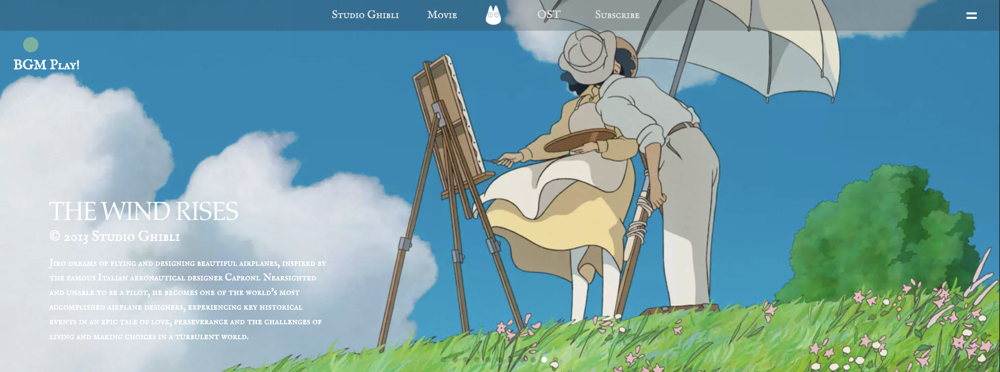

Portfolio Info
한국에서는 공식적인 지브리 홈페이지가 없습니다. 저의 주변 사람들 애니메이션을 좋아하며 저 또한 좋아하는데 영화가 끝나고 그 감동과 여운을 느끼려고 하는 사람들에게 뭘 제공하면 좋을지 생각해 봤습니다.
이미지, 음악을 통해 지브리만의 특색을 살리고 이목을 집중시키려고 했습니다.
헤더를 최소한으로 줄이고 메인 화면에는 스와이퍼 갤러리를 활용하여 꽉 찬 화면으로 사용자가 처음 접속해서 볼 때 지브리만의 화려함을 연출합니다.
햄버거 메뉴를 누르면 각 li 요소(movie->Ocean Waves는 서브 페이지입니다.)에 마우스를 올리면 백그라운드 이미지가 바뀌는 효과 또한 보는 입장에서 재미를 만들어 냅니다.
그 밑엔 지브리 스튜디오의 간단한 요약과 이벤트성 글을 집어넣었으며 영화 리스트, OST, 구독칸을 넣었습니다.
소소한 애니메이션을 통해 시각적인 즐거움을 더했습니다.
서브 페이지(Ocean Waves)로 들어가게 되면 또 다른 테마의 분위기이며 바다의 느낌을 살려 백그라운드나 메인화면, BGM 색상을 어울리게 적용시켰습니다.